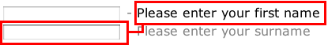
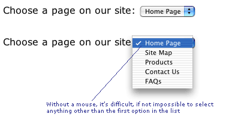

Accessible HTML/XHTML Forms: Beginner Level
Introduction
In this first look at forms and accessibility we’ll cover the very basics you should consider if you are to help as many users as possible to interact with you and your web site just as you would like them to.
Forms are often the most tricky aspect of web development for beginners to get their head around, largely because it means stepping out of the comfort zone of one-way information – no longer are you simply presenting information at the person viewing your site, now you are asking for input, for feedback that you have to process in some way. And just as it may be difficult for HTML beginners to understand just how they handle form data, so is it difficult to understand some of the issues relating to accessibility.
Static content presented to the person visiting your site may be perfectly well understood by someone using a screen reader, or perhaps a Braille computer, assuming you’ve used semantic, structural markup (such as h1 – h6 for headings). However, for someone visiting your site and simply reading the content is quite a passive activity – they can take it or leave it, whatever that ‘it’ may be. But with a form, the visitor has found something that they want to interact with and suddenly the playing field has changed – it’s a two-way street. Now, marking up your pages becomes crucial if you are to capture the correct information.
HTML Entities Used
The following are the HTML entities that you will use in your forms:
- The
<form>element (your container for everything that is to follow) <input>– which includes many types, including text, submit, button, radio button and checkbox<textarea>– for entering multi-line text, such as comments- and the
<select>element – otherwise known as the drop-down-list, or the pull-down menu (depending on your preference)
There is also a <button> element but this hasn’t been seen in wide usage since the steam engine was invented.
These elements are rendered and behave almost identically on different (GUI-based) browsers. There may be some styling changes from one browser to another, but essentially, a text input looks like a text input and a drop-down-list will behave as a drop-down list. In theory, using forms should be easy for everybody, regardless of the device or browser they are using.
The Basics of Layout
When you see a newspaper story, you read the heading and know that the text to follow is related to that, and the text that appears underneath a photo is the caption for that photo. Sometimes a page layout may differ from that expectation, and you may have to work harder to understand what’s going on – two photos with one caption sitting between them. OK, you’re clever, you can work it out.
With forms there are some well recognized CHI (Computer-Human Interaction) principles with forms that, like the newspaper analogy, mean that if you do things a certain way, these forms will be more easy to use. Because of this, some adaptive technologies, such as screen readers, follow those principles when interpreting a page that contains a form. As such, if they encounter a text input, they expect that the text related to it comes before that input … and so it goes looking for it! So, if a screen reader sees something like this it has difficulty:
<input type="text" name="firstname" id="firstname" /> - Please enter your first name<br />
<input type="text" name="surname" id="surname" /> - Please enter your surname<br />
Why? Because it may incorrectly associate the second input with the first line of text, as if you had this:
<input type="text" name="surname" id="surname" /><-- Please enter your first name<br />

It’s a recipe for disaster. But who puts the text after the input, we hear you cry? Well, for some inputs this is actually the correct way of doing things:
<input type="checkbox" name="athome" id="athome" /> Please call me at home<br />
<input type="checkbox" name="atwork" id="atwork" /> Please call me at work<br />
If you do nothing else, follow this advice and your forms will automatically become more accessible because this is how assistive devices expect them to be set out:
| HTML Element and type | Order of Appearance | Example |
|---|---|---|
| input type="text" | Descriptive label, HTML element | Your First Name<br /> |
| input type="password" | Descriptive label, HTML element | Your Passnumber<br /> |
| input type="button" | Not applicable (value attribute used instead) | <input type="button" name="cmdChkAvail" value="Check |
| input type="submit" | Not applicable (value attribute used instead) | <input type="submit" name="cmdBookNow" value="Place |
| input type="radio" | HTML element, Descriptive label | <input type="radio" name="radMarried" value="Yes" /> Yes, |
| input type="checkbox" | HTML element, Descriptive label | <input type="checkbox" name="chkSubscribe" |
| select | Descriptive label, HTML element |
|
| textarea | Descriptive label, HTML element | Your comments<br /> |
| button | Not applicable (value attribute used instead) | <button name="cmdBigButton">Go on, click me!</button> |
But What About Accessibility?
What? Oh yes, there’s not been much mention of any of ‘the accessibility tags’. Trust us, by following the guidelines above and laying out your forms according to recognised CHI principles, you will be making your forms more accessible and usable. For now, it’s about establishing good practices and keeping things simple (we”ll build on this foundation very soon). And in the spirit of keeping it simple, we should consider how scripting is used (and not used) to make forms more accessible.
This Script Sucks
Don’t assume scripting is enabled
A form should be usable regardless of whether scripting is enabled within a browser (if it even supports scripting – remember, some assistive devices do not support scripts at all). Server-side validation and manipulation of form data mean that it is eminently possible to do this. However, many developers still rely heavily on client-side scripting for validation or simply for triggering events (for example, here is is a form that is totally reliant on scripting being enabled for it to work: <input type="button" value="Place order" onclick="document.forms('main'.submit();" /> where <input type="submit" value="Place order" /> would do the job equally well).
Ensure that your form works with scripting disabled – let the server do the work!
Avoid JavaScript for Navigation
On the other hand, what if you are using JavaScript do do something with a form element that takes control away from the user? The classic example of this is the drop-down-list used as a navigation tool. Many sites use these in such a way that when you select an item from the list you are automatically taken to the page. However, these are very difficult to use (if not impossible) for people who cannot use a mouse (this includes blind users with screen readers, people with motor deficiencies and more).

Consequently, using the keyboard to change the list always results in the first item in the list being selected and activated. Trying to be clever has thrown in an accessibility hurdle. Keep it simple – use a drop-down-list if you want, but allow the user to activate the selection using a Go button, like this:

A Note About Tables
Another accessibility gotcha with forms is that they are invariably set out using tables to achieve a nice grid-like effect. This is not always an automatic accessibility problem, but it can be – a table layout is irrelevent to a screen reader which effectively reads the content in the order it appears in the source code. If you decide to split the text and the form element that the text relates to, you will get unstuck. This is because the screen reader ‘linearizes’ the content and then gets things badly wrong, as this image demonstrate:

Summary
So, those are a few basic rule regarding layout and positioning of form elements and the associated text which will get you off to a good start. In the intermediate page we’ll start to look at some of the HTML elements that specifically aid accessibility, including label, fieldset, legend and optgroup.
The Web Standards Project is a grassroots coalition fighting for standards which ensure simple, affordable access to web technologies for all.